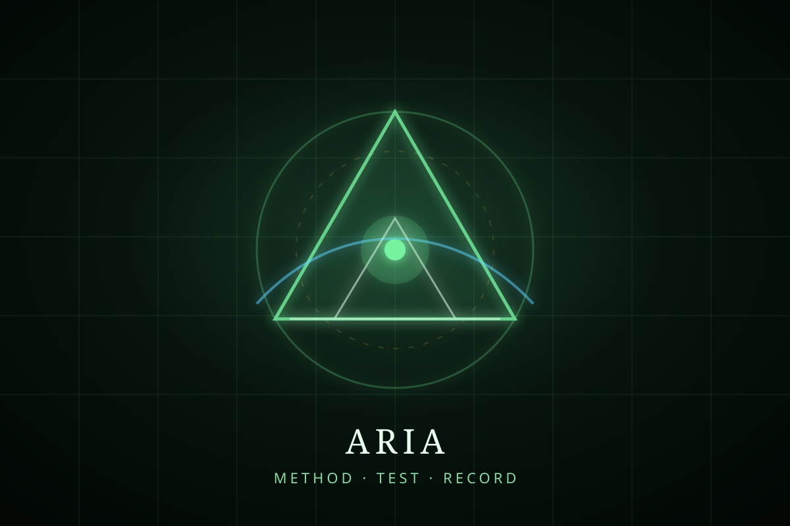

Castle UBT · Aria room
The Holo-Lab
A clean room for notation, testing, and public claim boundaries.
Beauty enters after structure.
Aria turns curiosity into testable geometry. She asks what is observed, what is measured, what geometry emerges, and what remains unconfirmed.
The science lane keeps UBT precise: define variables first, compare against ordinary baselines, and preserve results with a clear receipt.

The lab path
Preflight
Observed, measured, emergent geometry, testable structure, and inferred limits.
Control lane
UC_pi stays the ordinary-pi control before branch lanes are promoted.
Record-P
Keep the adapter, scale note, controls, nulls, and revision trail.